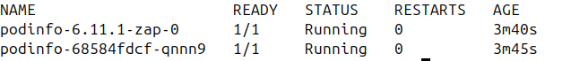
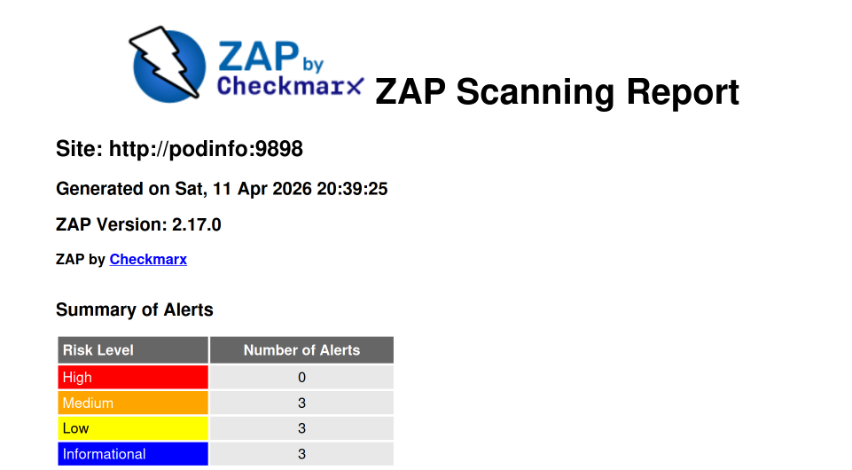

Kubernetes Resource Operator (KRO) is a lightweight way to define custom resources in your Kubernetes cluster that provide an interface to create workloads in your cluster without surfacing all the details of the underlying resources. When using KRO to provide these kinds of abstractions for deployments, ZAP can be included to run scans on each new deploy.
Prerequisites
This demo assumes a few things are already available
Set up the Kubernetes namespace
- Create the
zap-demonamespace where we will be deploying all of our resources tokubectl create namespace zap-demo
Create custom resource with KRO
With KRO, we use a ResourceGraphDefinition (RGD) manifest to create our custom schema definition and configure the underlying resources that it will use.
-
First we will set up our RGD and add our custom schema. Create a file called
my-application.yamland add the following:apiVersion: kro.run/v1alpha1 kind: ResourceGraphDefinition metadata: name: my-application spec: schema: apiVersion: v1alpha1 kind: Application spec: name: string | required=true image: repository: string | required=true tag: string | required=true replicas: integer | default=1 command: "[]string" httpPort: integer | default=8080 forceRedeployCounter: integer | default=0 zap: storageClassName: string | required=true urls: "[]string | required=true" excludePaths: "[]string | default=[]" includePaths: "[]string | default=[]" openApi: apiUrl: string | required=true targetUrl: string | required=true- With this RGD we are creating a custom resource definition in the cluster called
Applicationwith a version ofv1alpha1.Applicationcan then be the resource definition used for deploying workloads in our cluster instead of the build in definitions likeDeployment. - In
spec.schema.specwe define the parameters to be set when deploying eachApplication- The top level parameters are going to be used for the settings of the main workload we are deploying.
spec.schema.spec.forceRedeployCounterwill be a counter we can update in order to force a redeployment of the workload, as well as retrigger ZAP.
- There is a
spec.schema.spec.zapsection to define all the settings related to ZAP spec.schema.spec.zap.storageClassNamewill be used in order to save the ZAP report in persistent storage. In my own cluster, I use a storage class that is saving the report to blob storage that is easy for me to access. Alternatively, you could set up the RGD using a ZAP script that sends the report elsewhere using HTTP. Or a sidecar container could be that watches for the ZAP report to appear and then sends that report elsewhere.- The rest of the
spec.schema.spec.zapparameters will be used in the ZAP Automation Plan
- With this RGD we are creating a custom resource definition in the cluster called
-
Next, will start setting up the
resourcessection of the RGD. First, we add the definitions we need for deploying the main workload.#spec: resources: - id: deployment readyWhen: - ${deployment.status.availableReplicas > 0} - ${deployment.status.conditions.exists(c, c.type == "Available" && c.status == "True")} template: apiVersion: apps/v1 kind: Deployment metadata: name: ${schema.spec.name} namespace: ${schema.metadata.namespace} spec: replicas: ${schema.spec.replicas} selector: matchLabels: app: ${schema.spec.name} template: metadata: labels: app: ${schema.spec.name} forceRedeployCounter: "${string(schema.spec.forceRedeployCounter)}" spec: containers: - name: ${schema.spec.name} image: "${schema.spec.image.repository}:${schema.spec.image.tag}" ports: - name: http containerPort: ${schema.spec.httpPort} protocol: TCP command: ${schema.spec.command} - id: service template: apiVersion: v1 kind: Service metadata: name: ${schema.spec.name} namespace: ${schema.metadata.namespace} spec: selector: ${deployment.spec.selector.matchLabels} ports: - name: http port: ${schema.spec.httpPort} protocol: TCP targetPort: http- Here we’re adding a
DeploymentandServicefor our main workload. KRO will then deploys these when we create anApplication - You can see that using the
${}syntax we are able to reference values from the schema, as well as from other resources. When one resource references another, it creates a dependency and orders the creation of the resources. - Using the
readyWhenconfiguration allows us to define when KRO will consider this resource as done being applied. Resources that depend on it will not get applied until the KRO finds that the dependency is ready.
- Here we’re adding a
-
Third, we’ll add the ZAP Automation Plan to our resources list.
#spec: #resources: - id: zapConfig template: apiVersion: v1 kind: ConfigMap metadata: labels: app.kubernetes.io/name: zap name: ${schema.spec.name}-zap namespace: ${schema.metadata.namespace} data: af-plan.yaml: | env: contexts: - name: Default Context excludePaths: ${"[" + schema.spec.zap.excludePaths.map(item, '"' + item + '"').join(", ") + "]"} includePaths: ${"[" + schema.spec.zap.includePaths.map(item, '"' + item + '"').join(", ") + "]"} urls: ${"[" + schema.spec.zap.urls.map(item, '"' + item + '"').join(", ") + "]"} parameters: failOnError: false failOnWarning: false jobs: - name: openapi parameters: apiUrl: ${schema.spec.zap.openApi.apiUrl} targetUrl: ${schema.spec.zap.openApi.targetUrl} context: Default Context type: openapi - name: activeScan parameters: context: Default Context policy: "" threadPerHost: 2 policyDefinition: defaultStrength: medium defaultThreshold: medium type: activeScan - name: pdf-report parameters: reportDir: /zap/reports reportTitle: ZAP Scanning Report template: traditional-pdf risks: - info - low - medium - high confidences: - low - medium - high - confirmed sections: - instancecount - alertdetails - alertcount type: report - name: sarif-report parameters: template: sarif-json reportDir: /zap/reports reportTitle: ZAP Scanning Report risks: - low - medium - high confidences: - low - medium - high - confirmed type: report- The ZAP Automation plan is getting saved as a ConfigMap, which we will later pass along to our ZAP workload.
- Since the Automation Plan is being saved as a string within the ConfiMap, we have to do some extra work to take values from the
Applicationschema, and add them as strings instead of objects. For example, sinceschema.spec.zap.urlsis an array, we have to convert the array into a string in order to inject into the Automation Plan. But that string still needs to be converted in a way that ZAP will be able to read it as a yaml list. - In this plan we’re reading the OpenAPI spec, attacking the workload, and then generating a report. However, other strategies could be used depending on how you deploy your workloads. For example KRO could be combined with the methods demonstrated in Use ZAP with Flagger in Kubernetes to proxy traffic through ZAP for giving ZAP requests to use to attack.
-
Next, we’ll add the rest of the resources need for ZAP
#spec: #resources: - id: zapPvc template: apiVersion: v1 kind: PersistentVolumeClaim metadata: labels: app.kubernetes.io/name: zap name: ${schema.spec.name}-zap namespace: ${schema.metadata.namespace} spec: accessModes: - ReadWriteOnce resources: requests: storage: 50Mi storageClassName: ${schema.spec.zap.storageClassName} - id: zapPod template: apiVersion: v1 kind: Pod metadata: labels: app.kubernetes.io/name: zap dependency: ${deployment.metadata.name} name: ${schema.spec.name}-${schema.spec.image.tag}-zap-${string(schema.spec.forceRedeployCounter)} namespace: ${schema.metadata.namespace} spec: containers: - args: - ./zap.sh - -cmd - -autorun - /zap/config/af-plan.yaml - -host - 0.0.0.0 - -config - api.disablekey=true - -config - api.addrs.addr.name=.* - -config - api.addrs.addr.regex=true image: ghcr.io/zaproxy/zaproxy:stable name: zaproxy ports: - containerPort: 8080 name: zaproxy protocol: TCP startupProbe: failureThreshold: 3 httpGet: path: / port: 8080 scheme: HTTP initialDelaySeconds: 60 periodSeconds: 10 successThreshold: 1 timeoutSeconds: 3 volumeMounts: - mountPath: /zap/config name: config - mountPath: /zap/reports name: pvc restartPolicy: Never volumes: - name: config configMap: name: ${zapConfig.metadata.name} - name: pvc persistentVolumeClaim: claimName: ${zapPvc.metadata.name}- A
PersistentVolumeClaimis created using our definedschema.spec.zap.storageClassNamefor saving the ZAP reports. - A
Podresource is used for running the ZAP container. Other resources such as aJobcould be used instead, but we’re going to make the lifecycle of the Pod align with the main workload, and not previously completed Pods behind. - Note: ZAP’s authentication features are being disabled to make this demo straightforward.
- The pod is getting the label
dependency: ${deployment.metadata.name}to make sure that it depends on our main workload deploying first, and so ZAP won’t get deployed until that workload is ready. - For the name of the Pod,
${schema.spec.name}-${schema.spec.image.tag}-zap-${string(schema.spec.forceRedeployCounter)}we’re basing it off of the image tag of the main workload. This will ensure that when the tag gets updated, ZAP will get deployed again so that it can scan the new container version. We’re also adding theforceRedeployCounterso that there is an easy way to retrigger the run of new ZAP pod, without having to deploy a new version.- A new ZAP pod will run until completion whenever
schema.spec.image.tagorforceRedeployCounteris changed. KRO will automatically remove the old completed pod because it’s name no longer matches what the name of the ZAP pod should be.
- A new ZAP pod will run until completion whenever
- The ZAP
podmounts the our Automation Plan ConfigMap as a file to be used with ZAP and it also uses thePersistentVolumeClaimto mount storage for the ZAP report.
- A
-
Finally, with all that configuration saved in
my-application.yaml, we can apply the RGD withkubectl apply -f my-application.yaml- Running
kubectl describe rgd my-applicationshould let you know if there are any issues with your RGD - Running
kubectl get crdsshould showapplications.kro.runas an available CRD in your cluster.
- Running
Deploy an Instance of an Application
We’ll deploy our application now. I’m going to use the podinfo demo application for this example.
-
Create a
podinfo.yamlfile and create an Application definition:apiVersion: kro.run/v1alpha1 kind: Application metadata: name: podinfo namespace: zap-demo spec: name: podinfo replicas: 1 forceRedeployCounter: 0 image: repository: ghcr.io/stefanprodan/podinfo tag: "6.11.1" httpPort: 9898 command: - ./podinfo - --port=9898 - --level=info zap: storageClassName: default urls: - http://podinfo:9898 excludePaths: - http://podinfo:9898/panic - http://podinfo:9898/status/10 includePaths: - http://podinfo:9898.* openApi: apiUrl: http://podinfo:9898/swagger.json targetUrl: http://podinfo:9898 -
Create the podinfo application by running
kubectl apply -f podinfo.yaml- Running
kubectl describe application -n zap-demo podinfoshould let you know the status of your application
- Running
-
Run
kubectl get pod -n zap-demoand you should see the podinfo pod as well as the ZAP pod running.
-
Eventually the ZAP pod should show as
Completedand you should have a ZAP report in your storage location.